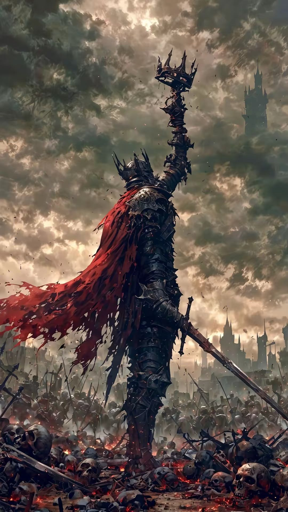

The Usurper crumbles. The throne room falls quiet except for the ragged breathing of soldiers who now have no cause left to fight for.
Your companions stand beside you — whole, bloodied perhaps, but standing. You did not lose a single one. That means something. That means everything.
The crown is returned to its proper place. Not by ceremony alone, but by the proof of this day: that you fought for every person who believed in you, and you brought them home.
The weeks that follow are not without difficulty. There are courts to mend, alliances to rebuild, and seeds of doubt to root out before they grow into rebellion. But the foundation is solid. The people witnessed what happened in this room.
You sit the throne with open eyes. Every shadow in the corridor, every whisper at court — you do not ignore them. You learned what happens when a king grows complacent.
The crown endures. And so do you — watching, ready, unwilling to let this happen again.
